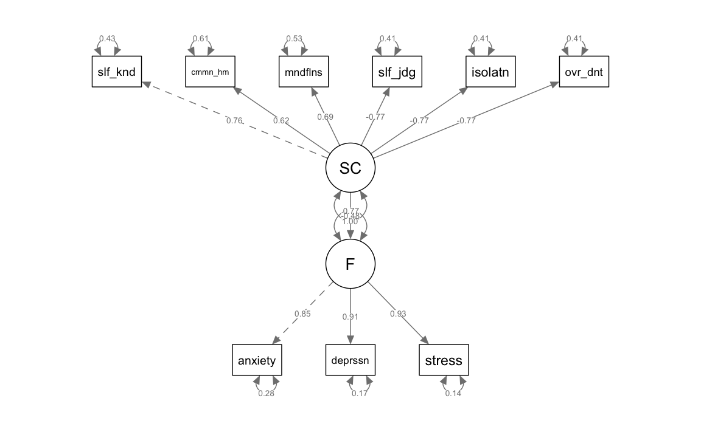

here::here("code", "_common.R") |>
source()
# Load packages
if (!requireNamespace("pacman")) install.packages("pacman")
pacman::p_load(
lavaan, lavaanExtra, lavaanPlot, semTools, semPlot, mvnormalTest, lme4,
DiagrammeRsvg, tidyr, psych, rsvg, effectsize
)50 Test del Modello e Indicizzazione
In questo capitolo imparerai a:
- calcolare e interpretare i principali indici di bontà di adattamento per i modelli SEM;
- comprendere vantaggi e limiti dei tradizionali indici di bontà di adattamento.
Prerequisiti
- Leggere il capitolo Structural Equation Modeling del testo di Petersen (2024).
Preparazione del Notebook
50.1 Introduzione
In questo capitolo, ci concentriamo sulle due principali categorie di statistiche per valutare l’adattamento globale nei modelli SEM: le statistiche di test del modello e gli indici di adattamento approssimativo. Queste due categorie si riferiscono rispettivamente al test di adattamento del modello e alla misurazione continua della sua bontà.
Statistiche di Test del Modello: Queste statistiche prevedono una decisione binaria, ossia stabilire se accettare o respingere le ipotesi nulle riguardanti il modello. La decisione si basa sui valori-p derivati dai test di significatività, con l’obiettivo di verificare se l’intero modello si adatti ai dati osservati.
Indici di Adattamento Approssimativo: A differenza delle statistiche di test, gli indici di adattamento approssimativo forniscono una misura continua che esprime il grado di adattamento del modello ai dati. Questo approccio ricorda la stima dell’effetto quantitativo più che un test dicotomico, fornendo così una valutazione più dettagliata dell’adattamento e superando la semplice accettazione o rifiuto dell’ipotesi nulla.
Un aspetto critico da considerare è che, benché entrambe le categorie di statistiche valutino la corrispondenza media o generale tra modello e dati, possono non rilevare un cattivo adattamento locale. Questo si riferisce a specifiche coppie di variabili osservate per cui il modello potrebbe non spiegare adeguatamente le associazioni osservate. È fondamentale riconoscere che un modello con adattamento locale inadeguato non dovrebbe essere accettato, indipendentemente dalla sua bontà di adattamento globale.
La valutazione completa di un modello SEM segue una sequenza metodica: specificazione del modello, stima dei parametri, verifica dell’adattamento e dei parametri, e, se necessario, modifica del modello. Questo processo iterativo prosegue finché si identifica un modello ritenuto accettabile.
Inoltre, questo capitolo esplora due metodi fondamentali per pianificare la dimensione del campione nei modelli SEM: l’analisi della potenza e la stima della precisione dei parametri (precisione nella pianificazione). Questi approcci sono essenziali per assicurare che lo studio sia adeguatamente dimensionato e che i parametri siano stimati con massima precisione. La valutazione degli indici di bontà dell’adattamento, ampiamente utilizzati nella letteratura, rappresenterà un elemento chiave in questo contesto, fornendo una panoramica completa degli strumenti disponibili per giudicare l’efficacia dei modelli SEM.
50.2 Valutazione della Bontà di Adattamento nel Modello SEM
Nel contesto dei modelli SEM (Structural Equation Modeling), la valutazione dell’adattamento del modello si basa sul confronto tra la matrice di varianze e covarianze stimata dal modello, \(\Sigma(\hat{\theta})\), e la matrice di covarianza campionaria, \(S\). Il nostro obiettivo è verificare se la discrepanza tra queste due matrici indica possibili inadeguatezze nel modello proposto. Ecco alcuni aspetti rilevanti da considerare:
Modelli Saturi vs Modelli Ristretti: Un modello saturo include un numero di parametri in \(\theta\) pari al numero di elementi distinti nella matrice di covarianza. In contrasto, un modello ristretto ha meno parametri rispetto al numero degli elementi distinti nella matrice di covarianza. La differenza tra questi due numeri corrisponde ai gradi di libertà del modello. Per esempio, in un modello saturo, se il numero dei parametri in \(\theta\) e il numero degli elementi distinti nella matrice di covarianza sono entrambi 3, allora il modello ha zero gradi di libertà.
Perfetto Adattamento dei Modelli Saturi: In un modello saturo, \(\Sigma(\hat{\theta})\) coincide sempre con \(S\), poiché il modello ha abbastanza parametri per adattarsi perfettamente ai dati del campione. Tuttavia, ciò non implica necessariamente che il modello rappresenti fedelmente la popolazione più ampia. Le stime dei parametri in un modello saturo possono fornire informazioni sui pattern di relazione tra le variabili nel campione specifico, ma è cruciale interpretarle con cautela.
Stima e Identificabilità del Modello: Generalmente, la stima dei parametri non si basa sul semplice risolvere un sistema di equazioni matematiche. Invece, si utilizza una funzione di adattamento o discrepanza tra \(\Sigma(\theta)\) e \(S\), cercando il valore ottimale di \(\hat{\theta}\) attraverso tecniche di ottimizzazione numerica. Un modello SEM deve essere identificabile, il che significa che deve essere possibile stimare univocamente i parametri del modello. L’identificabilità implica che il numero di unità di informazione, come elementi nella matrice di covarianza, sia maggiore o uguale al numero di parametri da stimare.
50.2.1 Gradi di Libertà e Identificabilità del Modello
I gradi di libertà (dof) in un modello SEM sono calcolati come:
\[ dof = \# (\text{unità di informazione}) - \# (\text{parametri da stimare}) \]
Per una matrice di covarianza di ordine $ p $, il numero di unità di informazione è $ $. Per garantire l’identificabilità, è necessario soddisfare alcune condizioni:
- In tutti i modelli, l’unità di misura delle variabili latenti deve essere specificata.
- Il numero di unità di informazione deve essere uguale o superiore al numero di parametri da stimare.
- In modelli ad un fattore, è richiesto un minimo di tre indicatori per una soluzione “appena identificata”.
- In modelli a più fattori, si raccomanda un minimo di tre indicatori per ogni variabile latente.
Un modello è:
- Non identificato se \(dof < 0\).
- Appena identificato o “saturo” se \(dof = 0\).
- Sovra-identificato se \(dof > 0\).
È importante notare che un’analisi fattoriale con solo due indicatori per un fattore non è possibile, poiché ci sono meno unità di informazione rispetto ai parametri da stimare. Un modello con tre indicatori e un fattore è “appena identificato”, senza gradi di libertà per valutare la bontà dell’adattamento. Per modelli ad un solo fattore comune latente, è quindi necessario disporre di almeno quattro indicatori.
50.3 Funzione di Discrepanza e Valutazione della Bontà di Adattamento
La funzione di discrepanza tra \(S\) (matrice di covarianza osservata) e \(\Sigma(\theta)\) (matrice di covarianza stimata dal modello in base ai parametri \(\theta\)) misura l’adeguatezza con cui il modello rappresenta i dati. Derivata dalla log-verosimiglianza per una distribuzione normale multivariata, la funzione confronta le strutture di covarianza teoriche e osservate.
La formula per la discrepanza ML (Massima Verosimiglianza) è:
\[ FML(S, \Sigma(\theta)) = \log|\Sigma(\theta)| - \log|S| + \text{traccia}(S\Sigma(\theta)^{-1}) - p, \]
dove \(|S|\) e \(|\Sigma(\theta)|\) indicano i determinanti di \(S\) e \(\Sigma(\theta)\) rispettivamente, e \(p\) è la dimensione delle matrici. Vediamo ogni termine per comprenderne il significato.
50.3.1 Componenti della Formula di Discrepanza
-
Logaritmo del determinante della matrice stimata, \(\log|\Sigma(\theta)|\):
- Il termine \(\log|\Sigma(\theta)|\) rappresenta una misura della “dimensione” o “scala” della matrice \(\Sigma(\theta)\). Più precisamente, il determinante di una matrice di covarianza può essere visto come una misura del volume dello spazio descritto dalle variabili nel modello: maggiore è il determinante, più “ampio” è lo spazio che copre la distribuzione del modello. Il logaritmo del determinante di \(\Sigma(\theta)\) contribuisce quindi a quantificare la scala complessiva del modello.
-
Logaritmo del determinante della matrice osservata, \(\log|S|\):
- Similmente, \(\log|S|\) rappresenta la scala della matrice di covarianza osservata nei dati. Questo termine funge da riferimento per confrontare la scala dei dati con quella stimata dal modello. In altre parole, \(|S|\) ci dice quale sarebbe la “dimensione” dei dati se fossero perfettamente rappresentati solo da \(S\), la matrice di covarianza empirica.
-
Traccia del prodotto \(S\Sigma(\theta)^{-1}\):
- La traccia, ossia la somma degli elementi diagonali, del prodotto \(S\Sigma(\theta)^{-1}\) rappresenta la relazione tra \(S\) e l’inverso della matrice \(\Sigma(\theta)\). Se \(S\) e \(\Sigma(\theta)\) fossero perfettamente identiche, questa traccia sarebbe pari a \(p\), la dimensione delle matrici, perché il prodotto di una matrice con la propria inversa è la matrice identità, che ha una somma degli elementi diagonali pari alla dimensione. Un valore diverso da \(p\) indica discrepanze tra le covarianze osservate e quelle stimate.
-
Termine di normalizzazione, \(-p\):
- Sottrarre \(p\) serve a normalizzare la traccia in modo che, in assenza di discrepanze (ovvero quando \(S = \Sigma(\theta)\)), il valore complessivo della funzione di discrepanza sia zero. Questo termine fa sì che la discrepanza sia relativa a quanto \(S\) differisca da \(\Sigma(\theta)\) in una forma più bilanciata.
50.3.2 Interpretazione Complessiva
La funzione di discrepanza combina queste tre componenti per ottenere una misura della distanza o della differenza tra \(S\) e \(\Sigma(\theta)\). Essa confronta sia la “dimensione” complessiva (tramite i termini log-determinante) sia la “forma” (tramite la traccia) delle due matrici. In sintesi, la funzione di discrepanza \(FML(S, \Sigma(\theta))\) ci indica quanto il modello con parametri \(\theta\) si discosta dai dati osservati e consente di capire se il modello è una buona rappresentazione delle relazioni di covarianza presenti nei dati.
Se questa funzione di discrepanza risulta elevata, significa che le covarianze stimate dal modello non rispecchiano adeguatamente quelle osservate, indicando una possibile necessità di migliorare il modello o di rivedere i parametri \(\theta\).
50.3.3 Distribuzione e Test di Adattamento
La discrepanza calcolata, sotto l’ipotesi di buon adattamento, si distribuisce asintoticamente come una variabile chi-quadrato (χ²), che permette un test statistico. I gradi di libertà sono dati dalla differenza tra il numero di elementi indipendenti nella matrice di covarianza e il numero di parametri del modello.
- Se il valore di discrepanza è minore del valore critico χ², l’ipotesi nulla di buon adattamento non viene rifiutata, suggerendo un buon modello.
- Se invece è maggiore, l’ipotesi viene rifiutata, indicando una necessità di revisione del modello.
Questo test fornisce un’indicazione quantitativa della bontà di adattamento, utile per valutare se le strutture teoriche catturano adeguatamente le relazioni nei dati.
50.4 Test \(\chi^2\)
Il test del chi quadrato (\(\chi^2\)) è utilizzato per determinare quanto bene un modello teorico si adatta ai dati osservati. La formula per calcolare la statistica \(\chi^2\) è:
\[ \chi^2 = N \times F_{\text{min}}, \]
dove: - \(N\) rappresenta la dimensione del campione. - \(F_{\text{min}}\) è il valore minimo della funzione di discrepanza.
La funzione di discrepanza, \(F\), è una misura di quanto le covarianze (o le varianze) osservate nei dati differiscano da quelle previste dal modello. Durante il processo di stima dei parametri del modello, questa funzione viene minimizzata. Il valore di \(F\) al suo minimo, \(F_{\text{min}}\), rappresenta la discrepanza minima tra i dati osservati e quelli previsti dal modello.
Nell’ambito dell’analisi strutturale di covarianza, il valore di \(F_{\text{min}}\) è tipicamente ottenuto attraverso la stima di massima verosimiglianza (Maximum Likelihood, ML). Tuttavia, ci sono due modi comuni per calcolare \(\chi^2\), che possono variare a seconda del software utilizzato:
- \(\chi^2 = (N - 1) \times F_{\text{min}}\)
- \(\chi^2 = N \times F_{\text{min}}\)
La scelta tra \(N\) e \(N-1\) dipende da come il software gestisce la normalizzazione e l’adattamento delle strutture di covarianza.
50.4.1 Interpretazione del Test del \(\chi^2\)
- Ipotesi Nulla $ H_0 $: Il modello si adatta bene ai dati. Ciò significa che non c’è una differenza significativa tra le covarianze osservate e quelle previste dal modello.
- Valore p: Un valore p basso (ad esempio, minore di 0.05) suggerisce che dovremmo rifiutare l’ipotesi nulla, indicando che il modello non si adatta bene ai dati.
50.4.2 Limitazioni
La statistica \(\chi^2\) è influenzata dalla dimensione del campione: con campioni ampi, anche lievi discrepanze tra il modello e i dati possono portare a un valore di \(\chi^2\) elevato, risultando in un rifiuto ingiustificato di un modello valido. Inoltre, il test del \(\chi^2\) presenta alcune limitazioni importanti:
- Non fornisce indicazioni sulla direzione o sulla natura della discrepanza: il test non specifica dove il modello si discosta dai dati o in che modo le discrepanze si manifestano.
- Efficacia ridotta in modelli complessi: per modelli con molteplici parametri, o in condizioni in cui le ipotesi fondamentali (ad esempio, la normalità multivariata) non sono soddisfatte, il test del \(\chi^2\) potrebbe non essere affidabile.
Per tali ragioni, è comune integrare il test del \(\chi^2\) con altri indici di adattamento, come l’indice di adattamento comparativo (CFI) e la radice dell’errore quadratico medio di approssimazione (RMSEA), per ottenere una valutazione più accurata e robusta dell’adattamento del modello ai dati.
Il test del \(\chi^2\) resta dunque un utile strumento di valutazione, ma è fondamentale interpretarlo con cautela, tenendo conto delle dimensioni del campione e di altri fattori che possono influire sul risultato. Nonostante le sue limitazioni, la statistica \(\chi^2\) ha un ruolo importante in contesti specifici, come:
- Confronto tra modelli nidificati: consente di valutare se aggiunte o modifiche migliorano significativamente l’adattamento del modello.
- Calcolo di altri indici di adattamento: come l’indice di Tucker-Lewis (TLI).
- Rapporto tra \(\chi^2\) e gradi di libertà: un rapporto basso è indicativo di un buon adattamento relativo del modello ai dati.
In conclusione, pur essendo utile, la statistica \(\chi^2\) va affiancata da altri strumenti di valutazione per una comprensione più completa e bilanciata della bontà di adattamento del modello.
50.4.3 Test di rapporto di verosimiglianza
Il test del \(\chi^2\) può essere impiegato come un test di rapporto di verosimiglianza per confrontare due modelli nidificati. In questo contesto, “nidificati” significa che uno dei modelli (considerato il modello più semplice o ristretto) è un caso speciale dell’altro (il modello più complesso), con meno parametri liberi da stimare. Questo tipo di test è particolarmente utile per valutare se l’aggiunta di parametri supplementari (rendendo il modello più complesso) migliora significativamente l’adattamento del modello ai dati.
Il processo di confronto tra i due modelli avviene nel seguente modo:
- Si stima il modello più semplice e si calcola il suo valore di \(\chi^2\).
- Si stima il modello più complesso e si calcola il suo valore di \(\chi^2\).
- Si confrontano i due valori di \(\chi^2\) per determinare se l’aggiunta di parametri aggiuntivi giustifica un miglioramento dell’adattamento del modello ai dati, dati i gradi di libertà aggiuntivi.
Se il valore p associato al \(\chi^2\) del modello più complesso è significativamente più basso rispetto a quello del modello più semplice, questo suggerisce che l’aggiunta dei parametri fornisce un miglioramento significativo nell’adattamento del modello. Al contrario, se non vi è un miglioramento significativo, si può concludere che il modello più semplice è preferibile in termini di parsimonia e adattamento.
50.5 Chi Quadrato Normalizzato (NC)
Il Chi Quadrato Normalizzato (NC) emerge come un tentativo di attenuare l’effetto della dimensione del campione sulla statistica del chi quadrato del modello (\(\chi^2\)). Questa pratica, adottata da alcuni ricercatori, consiste nel dividere \(\chi^2\) per il numero dei gradi di libertà del modello (dfM), risultando nella formula \(\frac{\chi_{ML}}{dfM}\). Nonostante l’intento di mitigare l’impatto della dimensione del campione (N), l’impiego di NC presenta limitazioni sostanziali:
- Influenza di N sui Modelli Erronei: La statistica \(\chi_{ML}\) è sensibile a N esclusivamente per i modelli non corretti. Questo implica che l’uso di NC per modelli veritieri potrebbe essere fuorviante.
- Indipendenza di dfM da N: I gradi di libertà del modello (dfM) non sono correlati con la dimensione del campione, rendendo la divisione di \(\chi_{ML}\) per dfM arbitraria e priva di fondamento statistico.
- Mancanza di Linee Guida: Non esistono criteri consolidati che definiscano i limiti “accettabili” per il valore di NC. Per esempio, non è chiaro se un valore massimo di NC debba essere inferiore a 2.0, 3.0, o altro.
In conclusione, data la mancanza di una solida giustificazione statistica o logica, Kline (2023) sconsiglia l’utilizzo del Chi Quadrato Normalizzato come strumento di valutazione della bontà di adattamento del modello.
50.6 Chi Quadrato Scalato e Errori Standard Robusti per Distribuzioni Non Normali
Nell’ambito dell’analisi di massima verosimiglianza (ML), sia l’approccio ML standard che quello robusto forniscono le stesse stime dei parametri. Tuttavia, il ML robusto differisce nell’introduzione di chi quadrati scalati (\(\chi^2\) scalati) e di errori standard robusti, i quali sono adattati per controbilanciare gli effetti della non normalità dei dati.
50.6.1 Chi Quadrato Scalato di Satorra-Bentler
Un metodo sviluppato da Satorra e Bentler, che si basa sull’utilizzo di dati completi, calcola il chi quadrato scalato (\(\chi_{SB}\)) applicando un fattore di correzione di scala, indicato con \(c\), al valore del chi quadrato non scalato del modello (\(\chi_{ML}\)). Questo fattore di scala \(c\) è determinato dalla curtosi multivariata media osservata nei dati grezzi. La formula specifica per il calcolo di \(\chi_{SB}\) è:
\[ \chi_{SB} = \frac{\chi_{ML}}{c}. \]
Questa formula evidenzia come il chi quadrato scalato di Satorra-Bentler modifica il chi quadrato tradizionale per tenere conto della curtosi nei dati, fornendo così una misura più affidabile della bontà di adattamento del modello in presenza di distribuzioni non normali.
Le distribuzioni di \(\chi_{SB}\) tendono ad avvicinarsi alle distribuzioni chi quadrato centrali, ma con una caratteristica fondamentale: le loro medie sono asintoticamente corrette. Questo significa che, su larga scala, \(\chi_{SB}\) fornisce una stima media accurata della discrepanza tra i dati osservati e quelli previsti dal modello, correggendo per eventuali distorsioni causate dalla non normalità dei dati.
50.6.2 Chi Quadrato Scalato di Asparouhov e Muthén
Un altro tipo di chi quadrato, sviluppato da Asparouhov e Muthén, non si basa sul \(\chi_{ML}\) standard. Invece, nei campioni di grandi dimensioni, il loro chi quadrato scalato corrisponde alla statistica T2* di Yuan e Bentler. Questa versione del chi quadrato è particolarmente adatta per gestire dati non normali o con valori mancanti. I gradi di libertà, sia per \(\chi_{SB}\) che per T2*, sono rappresentati da dfM, indicando la flessibilità del modello in termini di numero di parametri stimabili.
50.6.3 Altri Chi Quadrato Corretti
Al di là di questi, esistono chi quadrati che sono corretti sia per la media che per la varianza. Questi chi quadrati utilizzano fattori di scala diversi e, in genere, seguono distribuzioni chi quadrato centrali con medie e varianze che sono corrette in modo asintotico. Sebbene questi metodi richiedano maggiori risorse computazionali rispetto ai metodi che correggono solo per la media, tendono ad essere più precisi, specialmente in campioni di grandi dimensioni. Questa precisione aggiuntiva è particolarmente utile quando si affrontano set di dati complessi o di ampie dimensioni, permettendo una stima più accurata della bontà di adattamento del modello.
50.6.4 Metodi Robusti con lavaan
Il pacchetto lavaan offre diverse opzioni per implementare metodi robusti di stima basati sulla massima verosimiglianza (ML). Questi metodi sono particolarmente utili in presenza di deviazioni dalle assunzioni di normalità multivariata. Ecco le principali opzioni disponibili:
- MLM: Utilizzato per dati completi, calcola un chi-quadrato scalato secondo il metodo di Satorra-Bentler basato sulla media.
- MLR: Applicabile sia a dati completi che incompleti, genera un chi-quadrato corretto per la media basato sulla statistica T2* di Yuan-Bentler. È particolarmente indicato per analisi con dati mancanti.
- MLMV: Per dati completi, produce un chi-quadrato scalato corretto per la media e la varianza.
- MLMVS: Adatto a dati completi, utilizza una correzione per eteroschedasticità basata sul metodo di Satterthwaite, calcolando un chi-quadrato corretto per media e varianza.
50.6.4.1 La Matrice di Informazione in lavaan
Un concetto centrale per i metodi ML robusti è la matrice di informazione, utilizzata per stimare gli errori standard dei parametri. Questa matrice rappresenta la varianza e la covarianza dei parametri stimati ed è cruciale per testare ipotesi e costruire intervalli di credibilità o confidenza. In lavaan, la matrice di informazione può essere calcolata in due modi:
Matrice di Informazione Attesa: È l’opzione predefinita per il calcolo degli errori standard. Questa matrice si basa sulle aspettative teoriche delle varianze e covarianze dei parametri stimati, derivate dal modello e dai dati. È generalmente utilizzata in condizioni di dati completi e normali.
Matrice di Informazione Osservata: Viene impiegata quando sono presenti dati mancanti. In questo caso, le varianze e covarianze vengono calcolate utilizzando i dati effettivamente osservati. Questo approccio può fornire stime degli errori standard più affidabili in presenza di incompletezza nei dati.
Gli utenti possono scegliere esplicitamente quale matrice utilizzare, ad esempio forzando l’uso della matrice attesa anche con dati incompleti, in base alle esigenze specifiche della loro analisi.
50.6.4.2 Considerazioni Etiche e Metodologiche
È essenziale utilizzare questi strumenti in modo rigoroso e trasparente. Selezionare metodi o combinazioni di chi-quadrati scalati ed errori standard robusti solo per ottenere risultati che meglio supportano le proprie ipotesi compromette l’integrità della ricerca. Per questo motivo, i ricercatori dovrebbero:
- Dichiarare chiaramente i metodi utilizzati, incluso il tipo di matrice di informazione scelta.
- Segnalare eventuali variazioni nei risultati legate alla scelta del metodo.
- Garantire che le analisi siano guidate da principi metodologici, non da convenienze interpretative.
Queste buone pratiche sono fondamentali per mantenere l’affidabilità e la credibilità delle analisi svolte.
50.7 Indicizzazione dell’Adattamento del Modello
L’indicizzazione dell’adattamento del modello si basa sull’uso di indici di adattamento approssimati, i quali si differenziano dai test di significatività tradizionali. Invece di fornire una decisione dicotomica, come il rifiuto o l’accettazione di un’ipotesi nulla, questi indici offrono una misura continua di quanto bene un modello si adatta ai dati osservati. Non essendoci una separazione netta tra i limiti dell’errore di campionamento, gli indici di adattamento forniscono una valutazione più sfumata e graduale della bontà di adattamento.
Questi indici possono essere classificati in due categorie principali:
- Statistiche di Cattivo Adattamento: In questa categoria, valori più elevati indicano un peggior adattamento del modello ai dati. Un esempio tipico di questa categoria è il chi quadrato del modello, dove valori più alti suggeriscono una maggiore discrepanza tra il modello e i dati.
- Statistiche di Buon Adattamento: Al contrario, per gli indici in questa categoria, valori più alti segnalano un migliore adattamento del modello ai dati. Molti di questi indici sono normalizzati in modo che il loro intervallo varii da 0 a 1.0, dove 1.0 rappresenta l’adattamento ottimale del modello.
A differenza del test del chi quadrato, che si basa su un framework teorico ben definito, l’interpretazione e l’applicazione degli indici di adattamento approssimati non sono guidate da un unico insieme di principi teorici consolidati. Questa situazione fa sì che la valutazione dell’adattamento del modello si allinei maggiormente a ciò che Little (2013) ha descritto come “scuola di modellazione”. Questo approccio contempla l’analisi di modelli statistici complessi in un contesto in cui le regole decisionali sono meno rigide e più soggette a interpretazione.
La natura flessibile di questo approccio rispecchia la varietà e la complessità dei modelli statistici, che devono essere personalizzati per rispondere a specifiche domande di ricerca. Questa flessibilità, tuttavia, porta con sé una certa ambiguità nelle regole di valutazione dei modelli statistici. Pur offrendo la possibilità di adattare l’analisi alle particolarità di ogni studio, questa mancanza di rigore teorico uniforme può talvolta non tradursi in pratiche ottimali di modellazione.
La questione filosofica relativa all’adattamento esatto dei modelli statistici solleva dubbi sull’idea di perfezione come standard per questi modelli. In effetti, è ampiamente riconosciuto che tutti i modelli statistici sono in qualche misura imperfetti; sono piuttosto strumenti di approssimazione che aiutano i ricercatori a organizzare e interpretare le loro osservazioni sui fenomeni di interesse. Un modello troppo semplificato, che non cattura la complessità del fenomeno, può essere inadeguato e quindi rifiutato. Allo stesso tempo, un modello eccessivamente complesso, che cerca di replicare fedelmente il fenomeno, può risultare di scarsa utilità scientifica a causa della sua complessità eccessiva.
George Box, nel suo influente lavoro del 1976, avanzò l’idea che nessun modello statistico potesse essere considerato perfettamente “corretto”. Questa visione nasce dalla consapevolezza che tutti i modelli hanno una certa dose di imperfezione intrinseca. Box suggeriva che lo scopo principale di uno scienziato dovrebbe essere la ricerca di una “descrizione economica” dei fenomeni naturali, cercando cioè di formulare modelli che siano semplici, ma al contempo efficaci, nella rappresentazione della realtà. Egli criticava la tendenza a sovraelaborare o sovraparametrizzare i modelli, considerandola un segno di mediocrità nella pratica scientifica. Box enfatizzava l’importanza di concentrarsi sugli errori sostantivi, o “tigri”, piuttosto che su piccole imperfezioni, o “topi”, affermando:
“Since all models are wrong the scientist must be alert to what is importantly wrong. It is inappropriate to be concerned about mice when there are tigers abroad.”
Ciò implica che l’obiettivo nella modellazione statistica non dovrebbe essere una perfezione irraggiungibile, ma piuttosto lo sviluppo di modelli che, pur nella loro semplicità, riescano a cogliere gli aspetti fondamentali dei fenomeni analizzati. Questo richiede un equilibrio tra la complessità necessaria per una descrizione accurata e la semplicità che rende un modello pratico e interpretabile.
Hayduk (2014), nel commentare l’affermazione di Box, si focalizza specificatamente sul contesto della modellizzazione SEM (Structural Equation Modeling). Egli identifica le “tigri”, ovvero gli errori gravi nei modelli, come indicatori di una specificazione errata del modello. Hayduk sottolinea l’importanza critica di riconoscere e correggere gli errori significativi piuttosto che disperdere energie su dettagli minori. In sostanza, Hayduk rafforza l’idea che è essenziale distinguere tra errori minori e maggiori, questi ultimi potendo compromettere seriamente la validità e l’utilità di un modello statistico.
50.8 Tipologie di Indici di Adattamento Approssimati
Gli indici di adattamento approssimati possono essere classificati in diverse categorie, che riflettono diversi aspetti della bontà di adattamento di un modello statistico ai dati. Sebbene questa classificazione non sia esaustiva né le categorie siano mutualmente esclusive, i tipi principali di indici di adattamento sono i seguenti:
Indici di Adattamento Assoluto: Questi indici, come il GFI (Goodness of Fit Index), misurano quanto bene un modello spiega i dati senza riferimento ad altri modelli. Indicano l’abilità del modello di riprodurre i dati osservati.
Indici di Adattamento Parsimonioso: Questi indici confrontano i gradi di libertà del modello (dfM) con il numero massimo possibile di gradi di libertà disponibili nei dati. Un esempio è l’AGFI (Adjusted Goodness of Fit Index), che incorpora una penalità per la complessità del modello, benché non sia un indice di adattamento parsimonioso come definito in questa categoria.
Indici di Adattamento Incrementale (Relativo o Comparativo): Questi indici confrontano l’adattamento del modello del ricercatore con quello di un modello di base, tipicamente un modello di indipendenza che assume covarianze nulle tra le variabili osservate. È possibile scegliere un modello di base diverso, sebbene il calcolo manuale dell’indice possa essere necessario se il modello di base desiderato differisce da quello predefinito nel software.
Indici di Adattamento Non Centrale: Stimano il grado in cui l’ipotesi di adattamento esatto è falsa, dati il modello e i dati. Questi indici approssimano parametri nelle distribuzioni chi quadrato non centrali, che descrivono anche le distribuzioni campionarie per gli indici di adattamento di questo tipo.
Indici di Adattamento Predittivo (o basati sulla Teoria dell’Informazione): Derivati dalla teoria dell’informazione, stimano l’adattamento del modello in campioni di replica ipotetici della stessa dimensione, estratti casualmente dalla stessa popolazione del campione originale. Sono utilizzati principalmente per confrontare modelli alternativi basati sulle stesse variabili e adattati agli stessi dati, ma dove i modelli non sono gerarchicamente correlati.
Non tutti gli indici di adattamento approssimati hanno resistito alla prova del tempo. Ad esempio, gli indici di adattamento parsimonioso non hanno mai raggiunto una popolarità significativa tra i ricercatori applicati, restando relativamente oscuri. Altri indici, come il GFI e l’AGFI, sono stati criticati per la loro sensibilità alla dimensione del campione e al numero di indicatori nei modelli di analisi fattoriale.
I software moderni per la Structural Equation Modeling (SEM) presentano una notevole varietà nel numero di indici di adattamento approssimati forniti nei loro output. Programmi come Amos e LISREL elencano un numero elevato di indici (oltre 12), mentre altri come lavaan e Mplus ne includono un numero più limitato (circa 4-5). Questa abbondanza di indici può portare al rischio di “cherry-picking”, cioè la tendenza a selezionare e riportare solo quegli indici che mostrano risultati favorevoli al modello proposto dal ricercatore. Per mitigare questo rischio, è consigliabile limitarsi a un insieme essenziale di indici e prestare attenzione all’analisi dei residui.
50.8.1 Modello Baseline
Il modello baseline, noto anche come modello nullo, è un modello in cui tutte le covarianze sono impostate a zero, mentre le varianze sono stimate liberamente. In questo modello, non si stimano i carichi fattoriali; ci si limita invece a stimare le medie e le varianze osservate, eliminando tutte le covarianze tra le variabili.
È utile pensare al modello nullo o baseline come il peggior modello possibile, da confrontare poi con il modello saturato, che rappresenta invece la migliore approssimazione ai dati. Teoricamente, il modello baseline è fondamentale per comprendere come vengono calcolati altri indici di adattamento del modello, in quanto fornisce un punto di riferimento iniziale per la valutazione della bontà di adattamento in un contesto di Modelli di Equazioni Strutturali.
50.8.2 Set di Indici di Adattamento Consigliati
Kline (2023) suggerisce un insieme essenziale di soli tre indici di adattamento approssimati, che sono ampiamente utilizzati nei software SEM e frequentemente presenti negli studi pubblicati. Questi indici sono stati selezionati per le seguenti ragioni:
Ampia Presenza nella Letteratura: Sono ampiamente riportati in numerosi studi SEM, rendendoli familiari sia ai ricercatori che ai revisori.
Standardizzazione: Le scale di questi indici non dipendono dalle variabili osservate o latenti, fornendo così una misura standardizzata di adattamento.
Validità Statistica Estesa: Almeno uno di questi indici, l’RMSEA, possiede un solido fondamento statistico e un quadro interpretativo più ampio per la stima degli intervalli, i test delle ipotesi e la pianificazione della dimensione del campione.
Nonostante la loro utilità, è fondamentale usare questi indici con attenzione. I ricercatori dovrebbero evitare l’uso acritico di soglie o punti di taglio, sia fissi sia variabili, che si suppone differenzino tra modelli con un buon o cattivo adattamento. L’applicazione di queste soglie può essere problematica, poiché non sono valide universalmente per tutti i tipi di modelli e set di dati. L’uso improprio di tali soglie può portare a decisioni errate, in particolare se si trascura l’analisi dei residui.
Il gruppo principale di tre indici di adattamento approssimati raccomandato comprende:
Root Mean Square Error of Approximation (RMSEA) di Steiger-Lind (Steiger, 1990), accompagnato dal suo intervallo di confidenza al 90%. L’RMSEA valuta l’adattamento assoluto del modello, penalizzando la complessità del modello, ma non è un indice di adattamento parsimonioso. È un indice di cattivo adattamento dove il valore zero rappresenta l’adattamento ideale, senza un limite massimo teorico.
Comparative Fit Index (CFI) di Bentler (Bentler, 1990). Il CFI è un indice di adattamento incrementale e valuta la bontà di adattamento relativa del modello rispetto a un modello di base. Si estende su una scala da 0 a 1.0, dove 1.0 indica l’adattamento ottimale, e non impone penalità per la complessità del modello.
Standardized Root Mean Square Residual (SRMR) (Jöreskog & Sörbom; 1981). L’SRMR è un indice di adattamento assoluto che misura la discrepanza tra le correlazioni osservate e quelle previste dal modello. Un valore di zero indica un adattamento perfetto.
Sia l’RMSEA sia il CFI incorporano il chi quadrato del modello e i suoi gradi di libertà nelle loro formule. Questo implica che condividono le stesse assunzioni distributive della corrispondente statistica di test. Se tali assunzioni non sono valide, i valori degli indici e della statistica di test (incluso il valore p) potrebbero non essere accurati. Entrambi gli indici sono stati inizialmente definiti per dati continui con distribuzioni normali analizzati tramite ML standard. Tuttavia, in presenza di dati significativamente non normali, i valori di chiML, RMSEA e CFI possono risultare distorti. Alcuni software SEM implementano correzioni ad hoc per la non normalità.
50.9 Misure di adeguamento per il confronto
50.9.1 CFI
Gli indici di adattamento comparativo [detti anche indici di adattamento incrementale; ad es. Hu & Bentler (1998)] valutano l’adattamento di una soluzione specificata dall’utente in relazione a un modello di base nidificato più ristretto. Tipicamente, il modello base è un modello “nullo” o “di indipendenza” in cui le covarianze tra tutti gli indicatori di input sono fissate a zero, ma nessun vincolo viene posto sulle varianze degli indicatori. Uno di questi indici, l’indice di adattamento comparativo (comparative fit index, CFI; Bentler, 1990). Il CFI si basa su un confronto relativo, situando il modello di interesse lungo un continuum che va dal modello peggiore (nullo) al modello perfetto (saturo).
Il CFI valuta la riduzione relativa del parametro di non-centralità (\(\lambda\)) tra il modello di interesse e il modello di riferimento (Bentler, 1990). Il parametro di non-centralità \(\lambda_m\) rappresenta il grado di errore di specificazione del modello \(m\) ed è calcolato come:
\[ \lambda_m = \chi^2_m - \text{df}_m, \]
dove \(\chi^2_m\) è il valore chi-quadro stimato per il modello e \(\text{df}_m\) rappresenta i gradi di libertà. Più alto è \(\lambda_m\), maggiore è la discrepanza tra il modello e i dati osservati. Il valore del CFI si basa sul rapporto tra i parametri di non-centralità del modello di interesse (\(\lambda_m\)) e del modello nullo (\(\lambda_b\)):
\[ CFI(m, b) = 1 - \frac{\lambda_m}{\lambda_b} = 1 - \frac{\chi^2_m - \text{df}_m}{\chi^2_b - \text{df}_b}. \]
Il valore del CFI varia generalmente tra 0 e 1 (anche se in casi particolari può superare 1 o essere negativo), dove un valore vicino a 1 indica un buon adattamento del modello rispetto al modello nullo.
50.9.1.1 Modello nullo come baseline
Il modello nullo è un modello in cui tutte le variabili osservate sono considerate non correlate. Il CFI misura quindi quanto il modello di interesse riesce a migliorare l’adattamento rispetto a questo modello di riferimento, in modo analogo al concetto di \(R^2\) per la regressione lineare.
50.9.1.2 Sensibilità ai dati e alle caratteristiche del modello
Il comportamento del CFI è influenzato da tre fattori principali:
- Dimensione del campione (\(n\)): Campioni più grandi aumentano il parametro di non-centralità del modello nullo (\(\lambda_b\)), migliorando la capacità del CFI di distinguere tra modelli.
- Numero di variabili osservate (\(p\)): Un numero elevato di variabili può complicare l’interpretazione del CFI, poiché aumenta i gradi di libertà del modello nullo, riducendo la non-centralità \(\lambda_b\).
- Correlazione tra variabili (\(R\)): Maggiore è la correlazione tra le variabili, più il modello nullo differisce dai dati, e più il CFI può differenziare tra modelli.
50.9.1.3 Regole empiriche
Valori del CFI superiori a 0.90 erano considerati accettabili in passato (Bentler & Bonett, 1980), mentre valori superiori a 0.95 sono oggi considerati indicativi di un buon adattamento (Hu & Bentler, 1999). Tuttavia, studi di simulazione più recenti, come quelli di Fan e Sivo nel 2005 e di Yuan nel 2005, hanno messo in dubbio l’universalità di un valore soglia specifico per il CFI, evidenziando che l’adeguatezza di tale valore può variare a seconda delle caratteristiche dei modelli e del grado di non normalità nei dati. Di conseguenza, è importante non applicare queste regole in modo meccanico, ma valutare il contesto specifico. Inoltre, Brosseau-Liard e Savalei (2014) hanno descritto delle versioni robuste del CFI adatte per dati non normali. Queste versioni del CFI sono calcolate e fornite dal software lavaan quando si utilizzano metodi di stima Maximum Likelihood (ML) robusti. Questo implica che, quando si lavora con dati che presentano deviazioni dalla normalità, queste versioni robuste del CFI possono offrire una misura più affidabile dell’adattamento del modello.
50.9.1.4 Variabilità campionaria
A livello di popolazione, un modello corretto dovrebbe avere un valore di CFI pari a 1. Tuttavia, la variabilità campionaria può influenzare il parametro di non-centralità \(\lambda_m\) e \(\lambda_b\), causando deviazioni rispetto alle aspettative teoriche. Questo fenomeno è particolarmente rilevante nei campioni piccoli o in presenza di modelli complessi.
50.10 Misure di adeguamento parsimonioso
50.10.1 TLI
Un indice che rientra nella degli indici di adeguamento parsimonioso è l’indice Tucker-Lewis (Tucker–Lewis index, TLI, anche chiamato indice di adattamento non normato). Il TLI si pone il problema di penalizzare la complessità del modello, ovvero include una funzione di penalizzazione per l’addizione di parametri che non migliorano in maniera sostanziale l’adattamento del modello. Il TLI è calcolato con la seguente formula:
\[ \begin{equation} TLI = \frac{(\chi^2_B / dof_B)–(\chi^2_T / dof_T)}{(\chi^2_B / dof_B) – 1}, \end{equation} \]
dove \(\chi^2_T\) è il valore \(\chi^2\) del modello target, \(dof_T\) sono i gradi di libertà del modello target, \(\chi^2_B\) è il valore \(\chi^2\) del modello baseline e \(dof_B\) sono i gradi di libertà del modello base.
L’Indice di Tucker-Lewis (TLI) può, in teoria, assumere valori inferiori a zero se il modello di base, ovvero un modello diverso da quello studiato dal ricercatore, mostra un ottimo adattamento ai dati. Tuttavia, questa eventualità è rara nella pratica. Al contrario, il TLI può superare il valore di 1.0 se il modello analizzato dal ricercatore si adatta in modo particolarmente stretto ai dati. Marsh e Balla (1994) hanno evidenziato che la dimensione del campione influenza poco i valori del TLI.
Secondo quanto osservato da Kenny (2020), si possono trarre due conclusioni importanti:
- Il Comparative Fit Index (CFI) e il TLI sono entrambi influenzati dall’entità delle correlazioni tra le variabili misurate. Ciò significa che valori medi di correlazione più elevati risultano in valori più alti sia per il CFI che per il TLI, e il contrario è vero per correlazioni medie più basse.
- I valori del CFI e del TLI mostrano una forte correlazione tra loro. Di conseguenza, è consigliabile riportare solo uno dei due indici per evitare ripetizioni e per mantenere la chiarezza del report. La scelta tra CFI e TLI dovrebbe basarsi su criteri specifici relativi al contesto e agli obiettivi dello studio in questione.
50.11 Misure di Adeguamento Assoluto
50.11.1 Root Mean Square Error of Approximation (RMSEA)
L’Errore Quadratico Medio di Approssimazione (RMSEA) misura quanto bene un modello statistico si adatta ai dati osservati, valutando l’adattamento in termini assoluti, piuttosto che confrontarlo con un modello di riferimento (come fanno indici quali CFI e TLI).
Il calcolo del RMSEA si basa sul chi-quadrato (\(\chi^2\)), che rappresenta la discrepanza tra la matrice di covarianza osservata e quella stimata dal modello. La discrepanza, indicata con \(\delta\), è definita come:
\[ \delta = \chi^2 - df, \]
dove \(df\) rappresenta i gradi di libertà del modello. Valori più alti di \(\delta\) indicano una maggiore discrepanza, ossia un peggior adattamento del modello ai dati.
La formula generale per il calcolo del RMSEA è:
\[ \text{RMSEA} = \sqrt{\frac{\max(0, \delta)}{df \cdot (n - 1)}}, \]
dove \(n\) è il numero di osservazioni nel campione. Questo indice riflette l’errore di approssimazione del modello rispetto alla matrice di covarianza della popolazione, tenendo conto della parsimonia del modello (ossia del numero di gradi di libertà).
50.11.2 Distribuzione del Chi-Quadrato e Non Centralità
Assumendo che:
- i dati seguano una distribuzione normale multivariata;
- il modello sia corretto;
- il campione sia grande e casuale;
il chi-quadrato del modello (\(\chi^2_{\text{ML}}\)) segue una distribuzione \(\chi^2\) con \(df_M\) gradi di libertà. Tuttavia, se il modello non è corretto, il chi-quadrato segue una distribuzione non centrale \(\chi^2(df_M, \lambda)\), dove \(\lambda\) rappresenta il parametro di non centralità, che indica il grado di discrepanza tra il modello e i dati.
Il parametro di non centralità normalizzato è definito come:
\[ \delta_{\text{norm}} = \max(0, \chi^2_{\text{ML}} - df_M). \]
Questo valore è utilizzato per stimare la discrepanza tra la matrice di covarianza osservata e quella della popolazione sotto il modello.
50.11.3 Formula Finale del RMSEA
Il valore finale del RMSEA, indicato spesso con \(\epsilon\), è calcolato come:
\[ \epsilon = \sqrt{\frac{\delta_{\text{norm}}}{df_M \cdot (n - 1)}}. \]
Sebbene \(\epsilon\) possa essere una stima distorta a causa della restrizione \(\epsilon \geq 0\), rappresenta una buona approssimazione dell’errore.
50.11.4 Soglie Interpretative
Browne e Cudeck (1993) suggerirono che:
- \(\epsilon \leq 0.05\) indica un buon adattamento del modello;
- \(0.05 < \epsilon \leq 0.08\) rappresenta un adattamento accettabile;
- \(\epsilon > 0.10\) segnala un cattivo adattamento.
Tuttavia, queste soglie non sono universali, e si consiglia di valutare anche il limite superiore dell’intervallo di confidenza di \(\epsilon\) (indicato come \(\epsilon_U\)) per un’interpretazione più accurata.
50.11.5 Considerazioni e Versioni Robuste
Interpretazione: L’interpretazione di \(\epsilon\), \(\epsilon_L\) (limite inferiore) e \(\epsilon_U\) (limite superiore) è appropriata in campioni ampi e con modelli ben specificati. In campioni piccoli o con errori di specificazione significativi, è necessaria maggiore cautela.
Penalità per Modelli Complessi: Studi di simulazione indicano che il RMSEA tende a penalizzare maggiormente i modelli con pochi gradi di libertà (ad esempio, modelli con poche variabili).
Versioni Robuste: Versioni robuste del RMSEA, come quella basata sul chi-quadrato scalato di Satorra-Bentler, correggono gli effetti della non normalità e tendono a essere più accurate rispetto alla versione standard, che può sovrastimare l’indice in condizioni di non normalità.
Potenza Statistica: Esistono metodi per calcolare la potenza statistica associata a ipotesi nulle basate sul RMSEA e per stimare la dimensione minima del campione necessaria a raggiungere determinati livelli di potenza.
Concludendo, il RMSEA è uno strumento potente per valutare l’adattamento assoluto di un modello, ma il suo utilizzo richiede attenzione alle specifiche del modello, alla qualità dei dati e al contesto dell’analisi.
50.11.6 Root Mean Square Residual (RMRS)
A differenza del chi quadrato del modello e dei gradi di libertà, che valutano la bontà di adattamento di un modello in base a criteri di adattamento globale, l’indice RMRS (Root Mean Square Residual) si concentra esclusivamente sui residui del modello, ovvero le discrepanze tra le correlazioni osservate e quelle previste dal modello.
La formula per calcolare l’RMRS è la seguente:
\[ RMRS = \sqrt{ \frac{2 \sum_i\sum_j(r_{ij} - \hat{r}_{ij})^2}{p(p+1)}}, \]
dove:
- \(p\) rappresenta il numero di item (variabili) nel modello,
- \(r_{ij}\) è la correlazione osservata tra le variabili \(i\) e \(j\),
- \(\hat{r}_{ij}\) è la correlazione prevista dal modello tra le variabili \(i\) e \(j\).
Un valore di RMRS pari a 0 indica un adattamento perfetto del modello, mentre valori crescenti indicano un adattamento meno preciso. In generale, un valore di SRMR inferiore a 0.08 è considerato favorevole (Hu e Bentler, 1999).
Tuttavia, è importante notare che il SRMR è una misura media e può nascondere variazioni significative tra i residui di correlazione individuali. Ad esempio, se il SRMR è 0.03, potrebbe sembrare un buon adattamento. Ma se i residui di correlazione variano da -0.12 a 0.18, con alcuni residui superiori a 0.10, potrebbe indicare problemi di adattamento locali più gravi.
Pertanto, quando si riportano i risultati in un report, per ottenere una comprensione più completa dell’adattamento del modello è consigliabile descrivere i residui di correlazione o, meglio ancora, presentare l’intera matrice dei residui, anziché basarsi esclusivamente su un valore medio come il SRMR.
50.11.7 Interpretazione con lavaan
L’interpretazione degli indici di bontà di adattamento trovati nella CFA o nella modellazione di equazioni strutturali può essere ottenuta usando le funzioni del pacchetto effectsize.
50.12 Adattamento Locale
I modelli SEM possono teoricamente superare i test di adattamento globale ma fallire nei test di adattamento locale. Questi dettagli, relativi all’adattamento del modello, sono esaminati direttamente nei test di adattamento locale. L’analisi dei residui (sia standardizzati che di correlazione) è quindi cruciale per una valutazione completa del modello (Maydeu-Olivares e Shi, 2017). Le recenti norme di reportistica per il SEM richiedono agli autori di descrivere sia l’adattamento globale che quello locale (Appelbaum et al., 2018); Greiff e Heene, 2017; Vernon e Eysenck, 2007).
50.12.1 Residui di Covarianza, Residui Standardizzati, Residui Normalizzati
Residui di Covarianza: Sono le differenze tra le covarianze osservate e quelle previste dal modello. Questi residui possono essere difficili da interpretare perché non sono standardizzati, ovvero la loro metrica dipende dalle scale delle variabili coinvolte. Pertanto, residui di covarianza per coppie di variabili diverse non sono direttamente confrontabili a meno che tutte le variabili non siano sulla stessa metrica.
Residui Standardizzati: Sono versioni standardizzate dei residui di covarianza, interpretati come un test z in campioni grandi. Un residuo standardizzato significativamente diverso da zero indica una discrepanza tra modello e dati. Tuttavia, la significatività di questi residui può dipendere dalla dimensione del campione, con residui vicini allo zero che possono essere significativi in campioni grandi, mentre residui relativamente grandi potrebbero non essere significativi in campioni piccoli.
Residui Normalizzati: Sono i rapporti tra i residui di covarianza e l’errore standard della covarianza campionaria. Sono generalmente più conservativi dei residui standardizzati in termini di test di significatività. In modelli complessi, quando non è possibile calcolare il denominatore di un residuo standardizzato, il residuo normalizzato fornisce un’alternativa più conservativa.
Nel software lavaan ci sono due opzioni principali per calcolare i residui di correlazione:
-
Opzione
cor.bollen: Questa specifica indica al computer di convertire separatamente le matrici di covarianza del campione e quelle implicite dal modello in matrici di correlazione prima di calcolare i residui. Questo processo comporta la standardizzazione di ciascuna matrice in base alle varianze (deviazioni standard quadrate) presenti nella diagonale principale di ciascuna matrice. Le varianze nella matrice di covarianza del campione sono osservate direttamente, mentre le varianze per le variabili endogene nella matrice di covarianza implicata dal modello sono previste dal modello e possono differire dalle varianze osservate corrispondenti. -
Opzione
cor.bentler: Questa opzione standardizza sia la matrice di covarianza del campione che quella implicata dal modello basandosi sulle varianze presenti solo nella matrice di covarianza del campione. Poiché non tutti gli elementi della diagonale principale nella matrice di covarianza implicata dal modello sono varianze osservate, alcuni valori dei residui di correlazione del tipo Bentler potrebbero non essere pari a zero. Tuttavia, i valori dei residui fuori diagonale per entrambi i metodi sono generalmente simili.
Per impostazione predefinita, lavaan utilizza il metodo cor.bollen per calcolare i residui di correlazione nelle sue analisi.
50.13 Esempio Empirico
Nel capitolo precedente abbiamo formulato un modello SEM nel quale abbiamo definito una variabile latente con le sei sottoscale della Self-Compassion Scale e una seconda variabile latente con le tre sottoscale della DASS-21. Abbiamo ipotizzato che il fattore dell’autocompassione eserciti un effetto (protettivo) nei confronti del disagio psicologico misurato dal fattore definito dalle sottoscale della DASS-21.
Importiamo i dati in R.
d_sc <- read.csv("../../data/dass_rosenberg_scs.csv", header = TRUE)Definiamo il modello SEM.
mod_sc <- "
F =~ anxiety + depression + stress
SC =~ self_kindness + common_humanity + mindfulness +
self_judgment + isolation + over_identification
F ~ SC
"Adattiamo il modello.
fit_sc <- lavaan::sem(mod_sc, d_sc)Creiamo un diagramma di percorso.
semPlot::semPaths(fit_sc,
what = "col", whatLabels = "std", style = "mx",
layout = "tree2", nCharNodes = 7,
shapeMan = "rectangle", sizeMan = 8, sizeMan2 = 5
)
I coefficienti stimati nel modello SEM appaiono coerenti e in linea con le aspettative, in particolare il coefficiente che descrive l’effetto “causale” del fattore dell’autocompassione sul disagio emotivo, che si attesta a -0.48. Questo valore negativo corrobora l’ipotesi secondo cui l’autocompassione svolge un ruolo di fattore protettivo contro il disagio emotivo. Tuttavia, prima di confermare definitivamente questa conclusione, è cruciale esaminare gli indici di bontà di adattamento del modello. Questi indici ci permetteranno di valutare quanto accuratamente il modello SEM si adatta ai dati osservati, fornendo un quadro più chiaro della validità delle nostre inferenze. In altre parole, sebbene il modello suggerisca una relazione negativa tra autocompassione e disagio emotivo, la conferma finale di questa associazione dipenderà dall’adeguatezza complessiva del modello rispetto ai dati.
Calcoliamo gli indici di bontà di adattamento.
fitMeasures(fit_sc)
#> npar fmin chisq
#> 1.90e+01 4.27e-01 4.49e+02
#> df pvalue baseline.chisq
#> 2.60e+01 0.00e+00 3.13e+03
#> baseline.df baseline.pvalue cfi
#> 3.60e+01 0.00e+00 8.63e-01
#> tli nnfi rfi
#> 8.11e-01 8.11e-01 8.01e-01
#> nfi pnfi ifi
#> 8.56e-01 6.19e-01 8.64e-01
#> rni logl unrestricted.logl
#> 8.63e-01 -1.23e+04 -1.21e+04
#> aic bic ntotal
#> 2.47e+04 2.47e+04 5.26e+02
#> bic2 rmsea rmsea.ci.lower
#> 2.47e+04 1.76e-01 1.62e-01
#> rmsea.ci.upper rmsea.ci.level rmsea.pvalue
#> 1.90e-01 9.00e-01 0.00e+00
#> rmsea.close.h0 rmsea.notclose.pvalue rmsea.notclose.h0
#> 5.00e-02 1.00e+00 8.00e-02
#> rmr rmr_nomean srmr
#> 1.20e+00 1.20e+00 7.10e-02
#> srmr_bentler srmr_bentler_nomean crmr
#> 7.10e-02 7.10e-02 7.90e-02
#> crmr_nomean srmr_mplus srmr_mplus_nomean
#> 7.90e-02 7.10e-02 7.10e-02
#> cn_05 cn_01 gfi
#> 4.65e+01 5.45e+01 8.46e-01
#> agfi pgfi mfi
#> 7.33e-01 4.89e-01 6.69e-01
#> ecvi
#> 9.26e-01L’analisi degli indici di bontà di adattamento rivela alcune preoccupazioni significative riguardo alla validità del nostro modello SEM. Il rapporto \(\chi^2 / df\) emerge come eccessivamente elevato, segnalando una possibile mancanza di adattamento:
449.141 / 26
#> [1] 17.3Analogamente, i valori di CFI e TLI sono inferiori al livello desiderato, suggerendo che il modello non rappresenta adeguatamente la struttura dei dati. In aggiunta, gli indici RMSEA e SRMR superano le soglie accettabili, indicando ulteriormente un’inadeguata aderenza del modello ai dati.
Di fronte a questi risultati, è imprudente accettare la conclusione precedentemente formulata secondo cui l’autocompassione agisce come un fattore protettivo contro il disagio emotivo. Questa interpretazione, benché teoricamente fondata, non trova un solido supporto empirico nel contesto del modello attuale.
In questa situazione, un percorso costruttivo potrebbe essere quello di rivedere e potenzialmente modificare il modello. L’obiettivo sarebbe quello di esplorare alternative che potrebbero risultare in un migliore adattamento ai dati, mantenendo al contempo l’adeguatezza teorica. Ciò potrebbe includere la revisione delle assunzioni del modello, la riconsiderazione delle variabili incluse o la ristrutturazione delle relazioni ipotizzate tra di esse. Solo attraverso un modello che dimostra una bontà di adattamento adeguata possiamo affermare con maggiore sicurezza che i dati empirici sostengono l’ipotesi dell’effetto protettivo dell’autocompassione sul disagio emotivo.
50.14 Potere Statistico e Precisione
Nell’ambito dei modelli di Structural Equation Modeling (SEM), l’analisi della potenza statistica è fondamentale per garantire l’affidabilità e la validità dei risultati. Esistono due approcci principali per quest’analisi: la potenza a priori (prospettica) e la potenza retrospettiva (post hoc, osservata).
Potenza a priori (Prospettica): Questa analisi viene effettuata prima della raccolta dei dati e mira a stimare la probabilità che uno studio identifichi un effetto significativo, se presente nella popolazione. È cruciale nella pianificazione della ricerca per determinare la dimensione del campione necessaria, aumentando così l’efficienza dello studio e prevenendo l’uso di campioni eccessivamente grandi o inadeguati. In SEM, la potenza a priori si stima specificando nel software le caratteristiche del modello di popolazione, ipotesi nulle e alternative, il livello di significatività statistica e la dimensione campionaria prevista.
Potenza Retrospettiva (Post Hoc, Osservata): A differenza dell’analisi a priori, questa viene condotta dopo la raccolta dei dati. Le statistiche campionarie vengono trattate come parametri reali della popolazione, ma questa pratica presenta limitazioni significative. Le stime possono essere distorte, e una maggiore potenza osservata non implica necessariamente una forte evidenza a favore delle ipotesi nulle non rifiutate. Inoltre, essendo una misura post hoc, non aiuta nella progettazione proattiva della ricerca.
Per l’analisi della potenza in SEM, sono stati sviluppati diversi metodi, tra cui:
- Il metodo Satorra–Saris stima la potenza del test del rapporto di verosimiglianza per un singolo parametro.
- Il metodo MacCallum–RMSEA si basa sulla RMSEA di popolazione e sulle distribuzioni chi-quadrato non centrali.
- Il metodo di simulazione Monte Carlo è un’alternativa moderna e flessibile che non presuppone né risultati continui né stima ML predefinita.
Con l’avanzamento degli strumenti informatici, l’analisi della potenza statistica in SEM è diventata più accessibile:
Software SEM con Simulazione Monte Carlo: Software come Mplus e LISREL includono capacità di simulazione Monte Carlo, permettendo di generare dati campionari basati su ipotesi del modello e di valutare la frequenza con cui i risultati significativi vengono ottenuti.
Metodo Kelley–Lai Precision: Calcola la dimensione campionaria minima necessaria per stimare parametri come l’indice RMSEA entro un margine di errore specificato.
Nel contesto di R, le funzioni semTools::findRMSEApower e semTools::findRMSEAsamplesize del pacchetto semTools facilitano queste analisi:
semTools::findRMSEApower: Determina la potenza di un test SEM data una dimensione specifica del campione, basandosi sull’RMSEA e altri parametri del test.semTools::findRMSEAsamplesize: Calcola la dimensione del campione necessaria per raggiungere una specifica potenza statistica in un test SEM, considerando l’RMSEA e altri criteri come il livello di significatività e la potenza desiderata.
Questi strumenti sono importanti per ottimizzare la progettazione della ricerca SEM, garantendo campioni adeguati e potenza statistica sufficiente per rilevare gli effetti di interesse.
50.15 Riflessioni Conclusive
Nella letteratura SEM, sono state avanzate critiche significative all’uso di indici come RMSEA, CFI e TLI e ai loro valori di cutoff convenzionali (si veda, ad esempio, Barrett, 2007). Nonostante queste critiche, tali indici continuano a essere ampiamente utilizzati nella ricerca SEM, in assenza di alternative più accettate e praticabili. Come sottolineato da Xia & Yang (2019), l’attuale prassi considera valori più elevati di RMSEA e valori più bassi di CFI e TLI come indicativi di un peggior adattamento del modello. Questo ha portato molti ricercatori a modificare i loro modelli per ottimizzare tali indici, spesso spingendoli a concentrarsi esclusivamente su questi criteri.
La dipendenza eccessiva da RMSEA, CFI e TLI ha condotto a una situazione in cui gli indici di adattamento vengono utilizzati come unico criterio per accettare o rifiutare un modello ipotizzato. Ad esempio, se un modello raggiunge soglie considerate “pubblicabili” (ad es., RMSEA < .06), viene spesso accettato senza ulteriori miglioramenti. Tuttavia, questa pratica è problematica: affermazioni come “poiché i valori di RMSEA, CFI e TLI indicano un buon adattamento, questo modello è stato scelto come modello finale” sono insufficienti e riduttive.
Il raggiungimento di soglie desiderate per questi indici dovrebbe rappresentare solo uno dei fattori da considerare nel processo di selezione del modello. È essenziale che i ricercatori:
Valutino altre opzioni di miglioramento del modello: Analizzando se esistano modifiche che potrebbero migliorare l’adattamento senza compromettere la validità teorica o la parsimonia.
Giustifichino le scelte adottate o scartate: Spiegando chiaramente perché determinate opzioni di miglioramento non sono state applicate e quali sono le implicazioni di tali decisioni.
Considerino le conseguenze scientifiche e pratiche: Valutando l’impatto delle scelte di modellazione sulle conclusioni scientifiche e, quando pertinente, sulle applicazioni cliniche.
In sintesi, affidarsi esclusivamente a soglie arbitrarie per RMSEA, CFI e TLI non è sufficiente per determinare la qualità di un modello. Un approccio più integrato e critico, che tenga conto di considerazioni teoriche, pratiche e metodologiche, è necessario per garantire che i modelli scelti siano solidi e utili per rispondere alle domande di ricerca.
Informazioni sull’Ambiente di Sviluppo
sessionInfo()
#> R version 4.4.2 (2024-10-31)
#> Platform: aarch64-apple-darwin20
#> Running under: macOS Sequoia 15.3
#>
#> Matrix products: default
#> BLAS: /Library/Frameworks/R.framework/Versions/4.4-arm64/Resources/lib/libRblas.0.dylib
#> LAPACK: /Library/Frameworks/R.framework/Versions/4.4-arm64/Resources/lib/libRlapack.dylib; LAPACK version 3.12.0
#>
#> locale:
#> [1] C/UTF-8/C/C/C/C
#>
#> time zone: Europe/Rome
#> tzcode source: internal
#>
#> attached base packages:
#> [1] stats graphics grDevices utils datasets methods base
#>
#> other attached packages:
#> [1] effectsize_1.0.0 rsvg_2.6.1 DiagrammeRsvg_0.1
#> [4] lme4_1.1-36 Matrix_1.7-2 mvnormalTest_1.0.0
#> [7] lavaanPlot_0.8.1 lavaanExtra_0.2.1 ggokabeito_0.1.0
#> [10] see_0.9.0 MASS_7.3-64 viridis_0.6.5
#> [13] viridisLite_0.4.2 ggpubr_0.6.0 ggExtra_0.10.1
#> [16] gridExtra_2.3 patchwork_1.3.0 bayesplot_1.11.1
#> [19] semTools_0.5-6 semPlot_1.1.6 lavaan_0.6-19
#> [22] psych_2.4.12 scales_1.3.0 markdown_1.13
#> [25] knitr_1.49 lubridate_1.9.4 forcats_1.0.0
#> [28] stringr_1.5.1 dplyr_1.1.4 purrr_1.0.2
#> [31] readr_2.1.5 tidyr_1.3.1 tibble_3.2.1
#> [34] ggplot2_3.5.1 tidyverse_2.0.0 here_1.0.1
#>
#> loaded via a namespace (and not attached):
#> [1] splines_4.4.2 later_1.4.1 datawizard_1.0.0
#> [4] XML_3.99-0.18 rpart_4.1.24 lifecycle_1.0.4
#> [7] Rdpack_2.6.2 rstatix_0.7.2 rprojroot_2.0.4
#> [10] lattice_0.22-6 insight_1.0.1 rockchalk_1.8.157
#> [13] backports_1.5.0 magrittr_2.0.3 openxlsx_4.2.8
#> [16] Hmisc_5.2-2 rmarkdown_2.29 httpuv_1.6.15
#> [19] qgraph_1.9.8 zip_2.3.1 pbapply_1.7-2
#> [22] minqa_1.2.8 RColorBrewer_1.1-3 ADGofTest_0.3
#> [25] multcomp_1.4-26 abind_1.4-8 quadprog_1.5-8
#> [28] pspline_1.0-21 nnet_7.3-20 TH.data_1.1-3
#> [31] sandwich_3.1-1 moments_0.14.1 nortest_1.0-4
#> [34] arm_1.14-4 codetools_0.2-20 tidyselect_1.2.1
#> [37] farver_2.1.2 stats4_4.4.2 base64enc_0.1-3
#> [40] jsonlite_1.8.9 Formula_1.2-5 survival_3.8-3
#> [43] emmeans_1.10.6 tools_4.4.2 Rcpp_1.0.14
#> [46] glue_1.8.0 mnormt_2.1.1 xfun_0.50
#> [49] withr_3.0.2 numDeriv_2016.8-1.1 fastmap_1.2.0
#> [52] boot_1.3-31 digest_0.6.37 mi_1.1
#> [55] timechange_0.3.0 R6_2.5.1 mime_0.12
#> [58] estimability_1.5.1 colorspace_2.1-1 gtools_3.9.5
#> [61] jpeg_0.1-10 copula_1.1-4 DiagrammeR_1.0.11
#> [64] generics_0.1.3 data.table_1.16.4 corpcor_1.6.10
#> [67] htmlwidgets_1.6.4 parameters_0.24.1 pkgconfig_2.0.3
#> [70] sem_3.1-16 gtable_0.3.6 pcaPP_2.0-5
#> [73] htmltools_0.5.8.1 carData_3.0-5 png_0.1-8
#> [76] reformulas_0.4.0 rstudioapi_0.17.1 tzdb_0.4.0
#> [79] reshape2_1.4.4 coda_0.19-4.1 visNetwork_2.1.2
#> [82] checkmate_2.3.2 nlme_3.1-167 curl_6.2.0
#> [85] nloptr_2.1.1 zoo_1.8-12 parallel_4.4.2
#> [88] miniUI_0.1.1.1 foreign_0.8-88 pillar_1.10.1
#> [91] grid_4.4.2 vctrs_0.6.5 promises_1.3.2
#> [94] car_3.1-3 OpenMx_2.21.13 xtable_1.8-4
#> [97] cluster_2.1.8 htmlTable_2.4.3 evaluate_1.0.3
#> [100] pbivnorm_0.6.0 mvtnorm_1.3-3 cli_3.6.3
#> [103] kutils_1.73 compiler_4.4.2 rlang_1.1.5
#> [106] ggsignif_0.6.4 fdrtool_1.2.18 plyr_1.8.9
#> [109] stringi_1.8.4 munsell_0.5.1 gsl_2.1-8
#> [112] lisrelToR_0.3 bayestestR_0.15.0 pacman_0.5.1
#> [115] V8_6.0.0 hms_1.1.3 stabledist_0.7-2
#> [118] glasso_1.11 shiny_1.10.0 rbibutils_2.3
#> [121] igraph_2.1.4 broom_1.0.7 RcppParallel_5.1.10